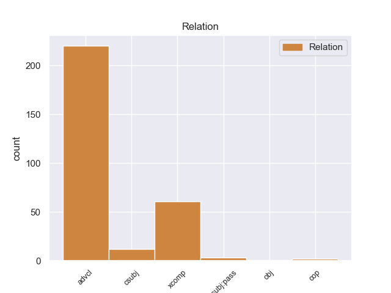
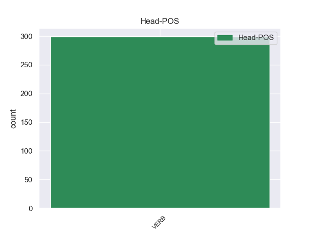
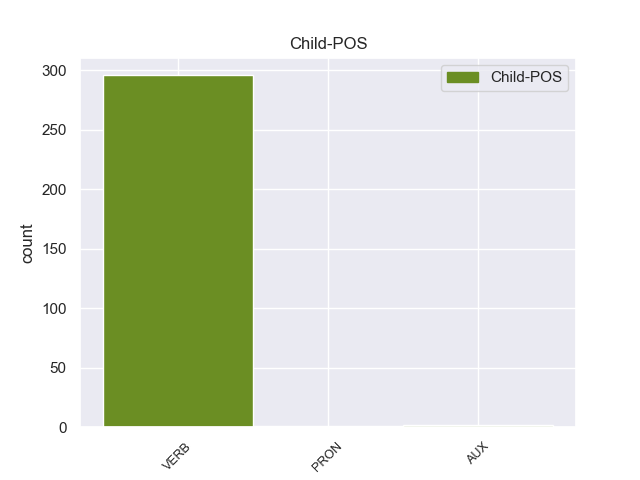

Distribution of features within this leaf



Agreement Rules sorted by frequency.
- When the dependent token is the adverbial clause modifier(advcl) of the head token, and the head token is VERB
1 Τόσο _ _ _ _ 0 _ _ _
2 το _ _ _ _ 0 _ _ _
3 ζήτημα _ _ _ _ 0 _ _ _
4 της _ _ _ _ 0 _ _ _
5 ασυλίας _ _ _ _ 0 _ _ _
6 όσο _ _ _ _ 0 _ _ _
7 και _ _ _ _ 0 _ _ _
8 η _ _ _ _ 0 _ _ _
9 αίτηση _ _ _ _ 0 _ _ _
10 για _ _ _ _ 0 _ _ _
11 άρση _ _ _ _ 0 _ _ _
12 της _ _ _ _ 0 _ _ _
13 έχουν έχω VERB _ Aspect=Imp|Mood=Ind|Number=Plur|Person=3|Tense=Pres|VerbForm=Fin|Voice=Act 0 _ _ _
14 σχέση _ _ _ _ 0 _ _ _
15 μόνο _ _ _ _ 0 _ _ _
16 με _ _ _ _ 0 _ _ _
17 το _ _ _ _ 0 _ _ _
18 εάν _ _ _ _ 0 _ _ _
19 το _ _ _ _ 0 _ _ _
20 Δικαστήριο _ _ _ _ 0 _ _ _
21 μπορεί μπορώ VERB _ Aspect=Imp|Mood=Ind|Number=Sing|Person=3|Tense=Pres|VerbForm=Fin|Voice=Act 13 advcl _ _
22 να _ _ _ _ 0 _ _ _
23 εκδώσει _ _ _ _ 0 _ _ _
24 δεσμευτικά _ _ _ _ 0 _ _ _
25 βουλεύματα _ _ _ _ 0 _ _ _
26 για _ _ _ _ 0 _ _ _
27 τον _ _ _ _ 0 _ _ _
28 περιορισμό _ _ _ _ 0 _ _ _
29 της _ _ _ _ 0 _ _ _
30 ελεύθερης _ _ _ _ 0 _ _ _
31 μετακίνησης _ _ _ _ 0 _ _ _
32 των _ _ _ _ 0 _ _ _
33 βουλευτών _ _ _ _ 0 _ _ _
34 του _ _ _ _ 0 _ _ _
35 Ευρωπαϊκού _ _ _ _ 0 _ _ _
36 Κοινοβουλίου _ _ _ _ 0 _ _ _
37 ή _ _ _ _ 0 _ _ _
38 την _ _ _ _ 0 _ _ _
39 ελευθερία _ _ _ _ 0 _ _ _
40 τους _ _ _ _ 0 _ _ _
41 να _ _ _ _ 0 _ _ _
42 έρχονται _ _ _ _ 0 _ _ _
43 σε _ _ _ _ 0 _ _ _
44 επικοινωνία _ _ _ _ 0 _ _ _
45 με _ _ _ _ 0 _ _ _
46 άλλα _ _ _ _ 0 _ _ _
47 πρόσωπα _ _ _ _ 0 _ _ _
48 . _ _ _ _ 0 _ _ _
1 Εδώ _ _ _ _ 0 _ _ _
2 και _ _ _ _ 0 _ _ _
3 ενάμισι _ _ _ _ 0 _ _ _
4 χρόνο _ _ _ _ 0 _ _ _
5 κοιτάζουμε _ _ _ _ 0 _ _ _
6 άπραγοι _ _ _ _ 0 _ _ _
7 τον _ _ _ _ 0 _ _ _
8 εντελώς _ _ _ _ 0 _ _ _
9 άνισο _ _ _ _ 0 _ _ _
10 πόλεμο _ _ _ _ 0 _ _ _
11 που _ _ _ _ 0 _ _ _
12 διεξάγουν _ _ _ _ 0 _ _ _
13 αυτοί _ _ _ _ 0 _ _ _
14 οι _ _ _ _ 0 _ _ _
15 δύο _ _ _ _ 0 _ _ _
16 αντίπαλοι _ _ _ _ 0 _ _ _
17 μεταξύ _ _ _ _ 0 _ _ _
18 τους _ _ _ _ 0 _ _ _
19 , _ _ _ _ 0 _ _ _
20 κοιτάζουμε κοιτάζω VERB _ Aspect=Imp|Mood=Ind|Number=Plur|Person=1|Tense=Pres|VerbForm=Fin|Voice=Act 0 _ _ _
21 τα _ _ _ _ 0 _ _ _
22 τανκς _ _ _ _ 0 _ _ _
23 των _ _ _ _ 0 _ _ _
24 Ισραηλινών _ _ _ _ 0 _ _ _
25 να _ _ _ _ 0 _ _ _
26 καταστρέφουν καταστρέφω VERB _ Aspect=Imp|Mood=Ind|Number=Plur|Person=3|Tense=Pres|VerbForm=Fin|Voice=Act 20 xcomp _ _
27 σπίτια _ _ _ _ 0 _ _ _
28 και _ _ _ _ 0 _ _ _
29 να _ _ _ _ 0 _ _ _
30 σκοτώνουν _ _ _ _ 0 _ _ _
31 παλαιστίνιους _ _ _ _ 0 _ _ _
32 πολίτες _ _ _ _ 0 _ _ _
33 . _ _ _ _ 0 _ _ _
1 Εν _ _ _ _ 0 _ _ _
2 πάση _ _ _ _ 0 _ _ _
3 περιπτώσει _ _ _ _ 0 _ _ _
4 , _ _ _ _ 0 _ _ _
5 είναι _ _ _ _ 0 _ _ _
6 σαφές _ _ _ _ 0 _ _ _
7 ότι _ _ _ _ 0 _ _ _
8 αυτό _ _ _ _ 0 _ _ _
9 που _ _ _ _ 0 _ _ _
10 εγκρίναμε _ _ _ _ 0 _ _ _
11 σήμερα _ _ _ _ 0 _ _ _
12 είναι _ _ _ _ 0 _ _ _
13 προϊόν _ _ _ _ 0 _ _ _
14 πολύ _ _ _ _ 0 _ _ _
15 βαθιάς _ _ _ _ 0 _ _ _
16 σκέψης _ _ _ _ 0 _ _ _
17 και _ _ _ _ 0 _ _ _
18 αποτελεί _ _ _ _ 0 _ _ _
19 ένα _ _ _ _ 0 _ _ _
20 δομημένο _ _ _ _ 0 _ _ _
21 σχέδιο _ _ _ _ 0 _ _ _
22 κανονισμού _ _ _ _ 0 _ _ _
23 , _ _ _ _ 0 _ _ _
24 αλλά _ _ _ _ 0 _ _ _
25 χρειάζεται χρειάζετω VERB _ Aspect=Imp|Mood=Ind|Number=Sing|Person=3|Tense=Pres|VerbForm=Fin|Voice=Pass 0 _ _ _
26 να _ _ _ _ 0 _ _ _
27 διεξαχθούν διεξαάζω VERB _ Aspect=Imp|Mood=Ind|Number=Plur|Person=3|Tense=Pres|VerbForm=Fin|Voice=Pass 25 csubj _ _
28 περαιτέρω _ _ _ _ 0 _ _ _
29 διαβουλεύσεις _ _ _ _ 0 _ _ _
30 και _ _ _ _ 0 _ _ _
31 αν _ _ _ _ 0 _ _ _
32 από _ _ _ _ 0 _ _ _
33 αυτές _ _ _ _ 0 _ _ _
34 ανακύψουν _ _ _ _ 0 _ _ _
35 σημαντικά _ _ _ _ 0 _ _ _
36 και _ _ _ _ 0 _ _ _
37 πειστικά _ _ _ _ 0 _ _ _
38 επιχειρήματα _ _ _ _ 0 _ _ _
39 , _ _ _ _ 0 _ _ _
40 φυσικά _ _ _ _ 0 _ _ _
41 θα _ _ _ _ 0 _ _ _
42 τα _ _ _ _ 0 _ _ _
43 λάβουμε _ _ _ _ 0 _ _ _
44 πολύ _ _ _ _ 0 _ _ _
45 σοβαρά _ _ _ _ 0 _ _ _
46 υπόψη _ _ _ _ 0 _ _ _
47 . _ _ _ _ 0 _ _ _
1 Προβλέπεται προβλέπω VERB _ Aspect=Imp|Mood=Ind|Number=Sing|Person=3|Tense=Pres|VerbForm=Fin|Voice=Pass 0 _ _ _
2 επίσης _ _ _ _ 0 _ _ _
3 οι _ _ _ _ 0 _ _ _
4 τράπεζες _ _ _ _ 0 _ _ _
5 να _ _ _ _ 0 _ _ _
6 ειδοποιούν ειδοποιω VERB _ Aspect=Imp|Mood=Ind|Number=Plur|Person=3|Tense=Pres|VerbForm=Fin|Voice=Act 1 csubj:pass _ _
7 τρεις _ _ _ _ 0 _ _ _
8 φορές _ _ _ _ 0 _ _ _
9 τους _ _ _ _ 0 _ _ _
10 καταθέτες _ _ _ _ 0 _ _ _
11 των _ _ _ _ 0 _ _ _
12 λογαριασμών _ _ _ _ 0 _ _ _
13 αυτών _ _ _ _ 0 _ _ _
14 εφόσον _ _ _ _ 0 _ _ _
15 το _ _ _ _ 0 _ _ _
16 υπόλοιπό _ _ _ _ 0 _ _ _
17 τους _ _ _ _ 0 _ _ _
18 είναι _ _ _ _ 0 _ _ _
19 μεγαλύτερο _ _ _ _ 0 _ _ _
20 των _ _ _ _ 0 _ _ _
21 100 _ _ _ _ 0 _ _ _
22 ευρώ _ _ _ _ 0 _ _ _
23 . _ _ _ _ 0 _ _ _
1 Ας εγώ PRON _ Aspect=Imp|Mood=Ind|Number=Sing|Person=1|Tense=Pres|VerbForm=Fin|Voice=Pass 2 obj _ _
2 ποντάρουμε ποντάρω VERB _ Aspect=Imp|Mood=Ind|Number=Plur|Person=1|Tense=Pres|VerbForm=Fin|Voice=Act 0 _ _ _
3 λοιπόν _ _ _ _ 0 _ _ _
4 σ _ _ _ _ 0 _ _ _
5 την _ _ _ _ 0 _ _ _
6 ικανότητά _ _ _ _ 0 _ _ _
7 της _ _ _ _ 0 _ _ _
8 να _ _ _ _ 0 _ _ _
9 επιφέρει _ _ _ _ 0 _ _ _
10 περαιτέρω _ _ _ _ 0 _ _ _
11 κινητοποιήσεις _ _ _ _ 0 _ _ _
12 σ _ _ _ _ 0 _ _ _
13 την _ _ _ _ 0 _ _ _
14 εαρινή _ _ _ _ 0 _ _ _
15 Σύνοδο _ _ _ _ 0 _ _ _
16 Κορυφής _ _ _ _ 0 _ _ _
17 της _ _ _ _ 0 _ _ _
18 Βαρκελώνης _ _ _ _ 0 _ _ _
19 ! _ _ _ _ 0 _ _ _
1 Αν _ _ _ _ 0 _ _ _
2 οι _ _ _ _ 0 _ _ _
3 αρχές _ _ _ _ 0 _ _ _
4 του _ _ _ _ 0 _ _ _
5 Ελσίνκι _ _ _ _ 0 _ _ _
6 είχαν _ _ _ _ 0 _ _ _
7 πει _ _ _ _ 0 _ _ _
8 ότι _ _ _ _ 0 _ _ _
9 θέλουν _ _ _ _ 0 _ _ _
10 100 _ _ _ _ 0 _ _ _
11 λεωφορεία _ _ _ _ 0 _ _ _
12 που _ _ _ _ 0 _ _ _
13 να _ _ _ _ 0 _ _ _
14 κινούνται _ _ _ _ 0 _ _ _
15 με _ _ _ _ 0 _ _ _
16 φυσικό _ _ _ _ 0 _ _ _
17 αέριο _ _ _ _ 0 _ _ _
18 και _ _ _ _ 0 _ _ _
19 αυτή _ _ _ _ 0 _ _ _
20 είναι _ _ _ _ 0 _ _ _
21 η _ _ _ _ 0 _ _ _
22 σύμβαση _ _ _ _ 0 _ _ _
23 , _ _ _ _ 0 _ _ _
24 τότε _ _ _ _ 0 _ _ _
25 εντάξει _ _ _ _ 0 _ _ _
26 , _ _ _ _ 0 _ _ _
27 αν _ _ _ _ 0 _ _ _
28 αυτό _ _ _ _ 0 _ _ _
29 είναι είμαι AUX _ Aspect=Imp|Mood=Ind|Number=Sing|Person=3|Tense=Pres|VerbForm=Fin|Voice=Pass 31 cop _ _
30 που _ _ _ _ 0 _ _ _
31 θέλουν θέλω VERB _ Aspect=Imp|Mood=Ind|Number=Plur|Person=1|Tense=Pres|VerbForm=Fin|Voice=Act 0 _ _ _
32 . _ _ _ _ 0 _ _ _
Disagree Examples:
1 Οι _ _ _ _ 0 _ _ _
2 ρεπόρτερς _ _ _ _ 0 _ _ _
3 της _ _ _ _ 0 _ _ _
4 εκπομπής _ _ _ _ 0 _ _ _
5 ξεναγούνται _ _ _ _ 0 _ _ _
6 σ _ _ _ _ 0 _ _ _
7 τους _ _ _ _ 0 _ _ _
8 χώρους _ _ _ _ 0 _ _ _
9 της _ _ _ _ 0 _ _ _
10 Ιεράς _ _ _ _ 0 _ _ _
11 Μονής _ _ _ _ 0 _ _ _
12 της _ _ _ _ 0 _ _ _
13 Ευαγγελίστριας _ _ _ _ 0 _ _ _
14 σ _ _ _ _ 0 _ _ _
15 τη _ _ _ _ 0 _ _ _
16 Σκιάθο _ _ _ _ 0 _ _ _
17 , _ _ _ _ 0 _ _ _
18 η _ _ _ _ 0 _ _ _
19 οποία _ _ _ _ 0 _ _ _
20 ιδρύθηκε ιδρύω VERB VERB Aspect=Perf|Mood=Ind|Number=Sing|Person=3|Tense=Past|VerbForm=Fin|Voice=Pass 0 _ _ _
21 το _ _ _ _ 0 _ _ _
22 1797 _ _ _ _ 0 _ _ _
23 , _ _ _ _ 0 _ _ _
24 διαδραματίζοντας _ _ _ _ 0 _ _ _
25 σημαντικό _ _ _ _ 0 _ _ _
26 ρόλο _ _ _ _ 0 _ _ _
27 σ _ _ _ _ 0 _ _ _
28 τον _ _ _ _ 0 _ _ _
29 απελευθερωτικό _ _ _ _ 0 _ _ _
30 αγώνα _ _ _ _ 0 _ _ _
31 κατά _ _ _ _ 0 _ _ _
32 των _ _ _ _ 0 _ _ _
33 Τούρκων _ _ _ _ 0 _ _ _
34 , _ _ _ _ 0 _ _ _
35 ενώ _ _ _ _ 0 _ _ _
36 σήμερα _ _ _ _ 0 _ _ _
37 φιλοξενεί φιλοξενώ VERB VERB Aspect=Imp|Mood=Ind|Number=Sing|Person=3|Tense=Pres|VerbForm=Fin|Voice=Act 20 advcl _ _
38 σπάνια _ _ _ _ 0 _ _ _
39 αντικείμενα _ _ _ _ 0 _ _ _
40 και _ _ _ _ 0 _ _ _
41 χειρόγραφα _ _ _ _ 0 _ _ _
42 . _ _ _ _ 0 _ _ _
1 Επιπλέον _ _ _ _ 0 _ _ _
2 , _ _ _ _ 0 _ _ _
3 θεωρούμε θεωρώ VERB VERB Aspect=Imp|Mood=Ind|Number=Plur|Person=1|Tense=Pres|VerbForm=Fin|Voice=Act 0 _ _ _
4 αυτά _ _ _ _ 0 _ _ _
5 τα _ _ _ _ 0 _ _ _
6 μέσα _ _ _ _ 0 _ _ _
7 ως _ _ _ _ 0 _ _ _
8 δικά _ _ _ _ 0 _ _ _
9 μας _ _ _ _ 0 _ _ _
10 , _ _ _ _ 0 _ _ _
11 επειδή _ _ _ _ 0 _ _ _
12 αυτό _ _ _ _ 0 _ _ _
13 το _ _ _ _ 0 _ _ _
14 Κοινοβούλιο _ _ _ _ 0 _ _ _
15 - _ _ _ _ 0 _ _ _
16 όπως _ _ _ _ 0 _ _ _
17 εσείς _ _ _ _ 0 _ _ _
18 υπενθυμίσατε _ _ _ _ 0 _ _ _
19 - _ _ _ _ 0 _ _ _
20 εργάστηκε εργάζομαι VERB VERB Aspect=Perf|Mood=Ind|Number=Sing|Person=3|Tense=Past|VerbForm=Fin|Voice=Pass 3 advcl _ _
21 πολύ _ _ _ _ 0 _ _ _
22 για _ _ _ _ 0 _ _ _
23 την _ _ _ _ 0 _ _ _
24 επίτευξή _ _ _ _ 0 _ _ _
25 τους _ _ _ _ 0 _ _ _
26 . _ _ _ _ 0 _ _ _
1 Ο _ _ _ _ 0 _ _ _
2 Αντιπρόεδρος _ _ _ _ 0 _ _ _
3 των _ _ _ _ 0 _ _ _
4 ΗΠΑ _ _ _ _ 0 _ _ _
5 , _ _ _ _ 0 _ _ _
6 Τζο _ _ _ _ 0 _ _ _
7 Μπάιντεν _ _ _ _ 0 _ _ _
8 , _ _ _ _ 0 _ _ _
9 συναντήθηκε _ _ _ _ 0 _ _ _
10 σ _ _ _ _ 0 _ _ _
11 το _ _ _ _ 0 _ _ _
12 Καπιτώλιο _ _ _ _ 0 _ _ _
13 με _ _ _ _ 0 _ _ _
14 τους _ _ _ _ 0 _ _ _
15 Δημοκρατικούς _ _ _ _ 0 _ _ _
16 της _ _ _ _ 0 _ _ _
17 Γερουσίας _ _ _ _ 0 _ _ _
18 αργά _ _ _ _ 0 _ _ _
19 τη _ _ _ _ 0 _ _ _
20 Δευτέρα _ _ _ _ 0 _ _ _
21 το _ _ _ _ 0 _ _ _
22 βράδυ _ _ _ _ 0 _ _ _
23 καθώς _ _ _ _ 0 _ _ _
24 άρχισαν αρχίζω VERB VERB Aspect=Perf|Mood=Ind|Number=Plur|Person=3|Tense=Past|VerbForm=Fin|Voice=Act 0 _ _ _
25 να _ _ _ _ 0 _ _ _
26 διαρρέουν διαρρέω VERB VERB Aspect=Imp|Mood=Ind|Number=Plur|Person=3|Tense=Pres|VerbForm=Fin|Voice=Act 24 xcomp _ _
27 πληροφορίες _ _ _ _ 0 _ _ _
28 για _ _ _ _ 0 _ _ _
29 επικείμενη _ _ _ _ 0 _ _ _
30 συμφωνία _ _ _ _ 0 _ _ _
31 . _ _ _ _ 0 _ _ _
1 Λίγο _ _ _ _ 0 _ _ _
2 πριν _ _ _ _ 0 _ _ _
3 την _ _ _ _ 0 _ _ _
4 έκθεση _ _ _ _ 0 _ _ _
5 έγινε γίνομαι VERB VERB Aspect=Perf|Mood=Ind|Number=Sing|Person=3|Tense=Past|VerbForm=Fin|Voice=Pass 0 _ _ _
6 γνωστό _ _ _ _ 0 _ _ _
7 ότι _ _ _ _ 0 _ _ _
8 οι _ _ _ _ 0 _ _ _
9 κρατήσεις _ _ _ _ 0 _ _ _
10 από _ _ _ _ 0 _ _ _
11 τη _ _ _ _ 0 _ _ _
12 Γερμανία _ _ _ _ 0 _ _ _
13 σ _ _ _ _ 0 _ _ _
14 την _ _ _ _ 0 _ _ _
15 Ελλάδα _ _ _ _ 0 _ _ _
16 μειώθηκαν _ _ _ _ 0 _ _ _
17 κατά _ _ _ _ 0 _ _ _
18 30% _ _ _ _ 0 _ _ _
19 , _ _ _ _ 0 _ _ _
20 ενώ _ _ _ _ 0 _ _ _
21 επίσημα _ _ _ _ 0 _ _ _
22 στοχεία _ _ _ _ 0 _ _ _
23 αναφέρουν αναφέρω VERB VERB Aspect=Imp|Mood=Ind|Number=Plur|Person=3|Tense=Pres|VerbForm=Fin|Voice=Act 5 advcl _ _
24 ότι _ _ _ _ 0 _ _ _
25 την _ _ _ _ 0 _ _ _
26 Ελλάδα _ _ _ _ 0 _ _ _
27 , _ _ _ _ 0 _ _ _
28 κατά _ _ _ _ 0 _ _ _
29 το _ _ _ _ 0 _ _ _
30 2011 _ _ _ _ 0 _ _ _
31 , _ _ _ _ 0 _ _ _
32 επισκέπτηκαν _ _ _ _ 0 _ _ _
33 2.240.000 _ _ _ _ 0 _ _ _
34 Γερμανοί _ _ _ _ 0 _ _ _
35 , _ _ _ _ 0 _ _ _
36 έχοντας _ _ _ _ 0 _ _ _
37 δαπανήσει _ _ _ _ 0 _ _ _
38 1.8 _ _ _ _ 0 _ _ _
39 δισεκατομμύρια _ _ _ _ 0 _ _ _
40 ευρώ _ _ _ _ 0 _ _ _
41 . _ _ _ _ 0 _ _ _
1 Σε _ _ _ _ 0 _ _ _
2 ορισμένα _ _ _ _ 0 _ _ _
3 όμως _ _ _ _ 0 _ _ _
4 σημεία _ _ _ _ 0 _ _ _
5 η _ _ _ _ 0 _ _ _
6 αρμόδια _ _ _ _ 0 _ _ _
7 επιτροπή _ _ _ _ 0 _ _ _
8 κατέληξε καταλήγω VERB VERB Aspect=Perf|Mood=Ind|Number=Sing|Person=3|Tense=Past|VerbForm=Fin|Voice=Act 0 _ _ _
9 σε _ _ _ _ 0 _ _ _
10 περίεργα _ _ _ _ 0 _ _ _
11 αποτελέσματα _ _ _ _ 0 _ _ _
12 , _ _ _ _ 0 _ _ _
13 κυρίως _ _ _ _ 0 _ _ _
14 όσον _ _ _ _ 0 _ _ _
15 αφορά _ _ _ _ 0 _ _ _
16 την _ _ _ _ 0 _ _ _
17 πρόταση _ _ _ _ 0 _ _ _
18 οδηγίας _ _ _ _ 0 _ _ _
19 για _ _ _ _ 0 _ _ _
20 τις _ _ _ _ 0 _ _ _
21 δημόσιες _ _ _ _ 0 _ _ _
22 συμβάσεις _ _ _ _ 0 _ _ _
23 για _ _ _ _ 0 _ _ _
24 αγαθά _ _ _ _ 0 _ _ _
25 , _ _ _ _ 0 _ _ _
26 υπηρεσίες _ _ _ _ 0 _ _ _
27 και _ _ _ _ 0 _ _ _
28 για _ _ _ _ 0 _ _ _
29 την _ _ _ _ 0 _ _ _
30 ανάθεση _ _ _ _ 0 _ _ _
31 κατασκευαστικών _ _ _ _ 0 _ _ _
32 συμβάσεων _ _ _ _ 0 _ _ _
33 , _ _ _ _ 0 _ _ _
34 το _ _ _ _ 0 _ _ _
35 άρθρο _ _ _ _ 0 _ _ _
36 53 _ _ _ _ 0 _ _ _
37 της _ _ _ _ 0 _ _ _
38 οποίας _ _ _ _ 0 _ _ _
39 θα _ _ _ _ 0 _ _ _
40 πρέπει _ _ _ _ 0 _ _ _
41 να _ _ _ _ 0 _ _ _
42 τροποποιηθεί _ _ _ _ 0 _ _ _
43 , _ _ _ _ 0 _ _ _
44 έτσι _ _ _ _ 0 _ _ _
45 ώστε _ _ _ _ 0 _ _ _
46 να _ _ _ _ 0 _ _ _
47 καταστεί _ _ _ _ 0 _ _ _
48 σημαντικά _ _ _ _ 0 _ _ _
49 ευκολότερο _ _ _ _ 0 _ _ _
50 να _ _ _ _ 0 _ _ _
51 λαμβάνεται _ _ _ _ 0 _ _ _
52 υπόψη _ _ _ _ 0 _ _ _
53 το _ _ _ _ 0 _ _ _
54 περιβάλλον _ _ _ _ 0 _ _ _
55 σ _ _ _ _ 0 _ _ _
56 το _ _ _ _ 0 _ _ _
57 πλαίσιο _ _ _ _ 0 _ _ _
58 των _ _ _ _ 0 _ _ _
59 δημοσίων _ _ _ _ 0 _ _ _
60 συμβάσεων _ _ _ _ 0 _ _ _
61 , _ _ _ _ 0 _ _ _
62 ενώ _ _ _ _ 0 _ _ _
63 σ _ _ _ _ 0 _ _ _
64 τη _ _ _ _ 0 _ _ _
65 δεύτερη _ _ _ _ 0 _ _ _
66 οδηγία _ _ _ _ 0 _ _ _
67 , _ _ _ _ 0 _ _ _
68 δηλαδή _ _ _ _ 0 _ _ _
69 σ _ _ _ _ 0 _ _ _
70 την _ _ _ _ 0 _ _ _
71 πρόταση _ _ _ _ 0 _ _ _
72 οδηγίας _ _ _ _ 0 _ _ _
73 για _ _ _ _ 0 _ _ _
74 τις _ _ _ _ 0 _ _ _
75 δημόσιες _ _ _ _ 0 _ _ _
76 συμβάσεις _ _ _ _ 0 _ _ _
77 σ _ _ _ _ 0 _ _ _
78 τον _ _ _ _ 0 _ _ _
79 τομέα _ _ _ _ 0 _ _ _
80 των _ _ _ _ 0 _ _ _
81 υδάτων _ _ _ _ 0 _ _ _
82 , _ _ _ _ 0 _ _ _
83 της _ _ _ _ 0 _ _ _
84 ενέργειας _ _ _ _ 0 _ _ _
85 και _ _ _ _ 0 _ _ _
86 των _ _ _ _ 0 _ _ _
87 μεταφορών _ _ _ _ 0 _ _ _
88 , _ _ _ _ 0 _ _ _
89 δεν _ _ _ _ 0 _ _ _
90 πραγματοποιείται πραγματοποιώ VERB VERB Aspect=Imp|Mood=Ind|Number=Sing|Person=3|Tense=Pres|VerbForm=Fin|Voice=Pass 8 advcl _ _
91 η _ _ _ _ 0 _ _ _
92 ίδια _ _ _ _ 0 _ _ _
93 τροποποίηση _ _ _ _ 0 _ _ _
94 του _ _ _ _ 0 _ _ _
95 άρθρου _ _ _ _ 0 _ _ _
96 54 _ _ _ _ 0 _ _ _
97 , _ _ _ _ 0 _ _ _
98 το _ _ _ _ 0 _ _ _
99 οποίο _ _ _ _ 0 _ _ _
100 είναι _ _ _ _ 0 _ _ _
101 ταυτόσημο _ _ _ _ 0 _ _ _
102 με _ _ _ _ 0 _ _ _
103 το _ _ _ _ 0 _ _ _
104 άρθρο _ _ _ _ 0 _ _ _
105 53 _ _ _ _ 0 _ _ _
106 της _ _ _ _ 0 _ _ _
107 πρώτης _ _ _ _ 0 _ _ _
108 οδηγίας _ _ _ _ 0 _ _ _
109 . _ _ _ _ 0 _ _ _